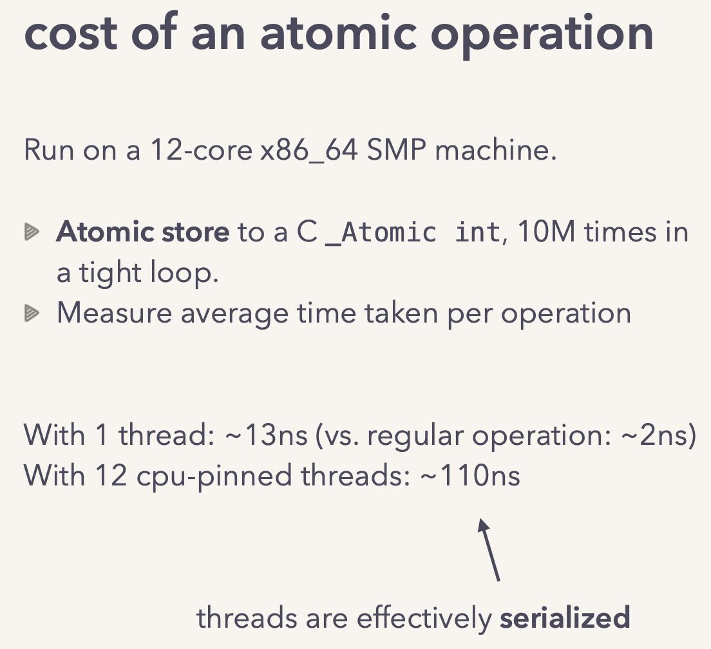
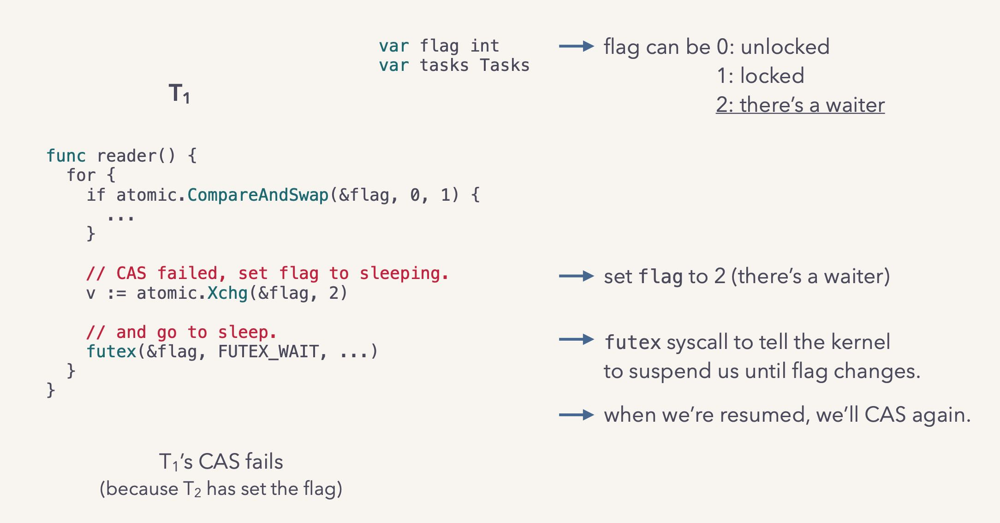
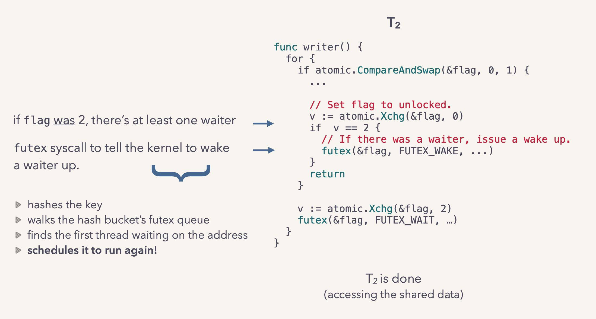
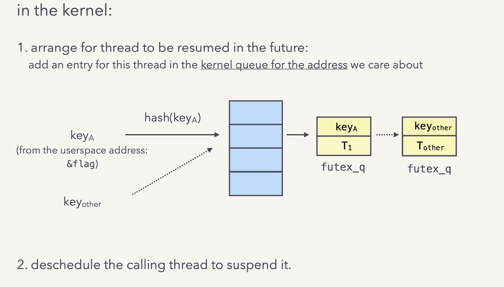
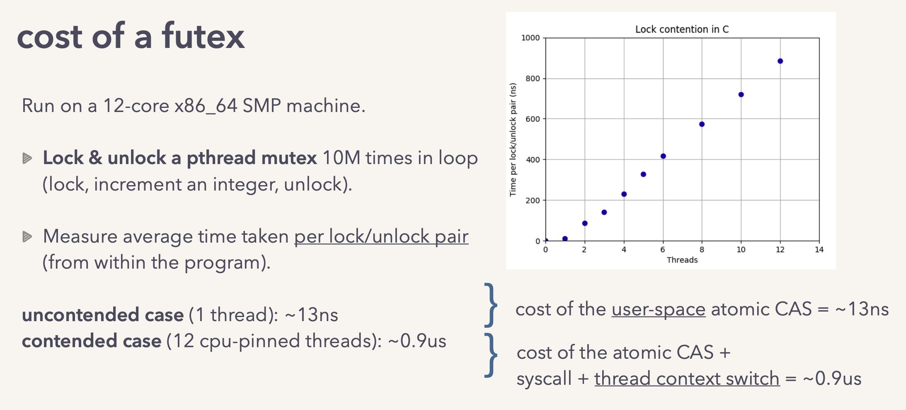
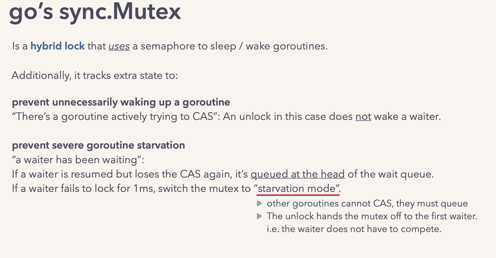

Let’s talk locks!
https://www.infoq.com/presentations/go-locks/
使用spinlokc容易空转CPU，所以为了避免浪费CPU有时候需要陷入到kernel里面挂起，linux下面可以使用futex来做到。
使用CAS/spinlock的开销大致如下
- 普通操作大约2ns
- 1个线程CAS操作大约13ns
- 12个线程CAS操作大约110ns（完全序列化，没有context switch时间）

Linux futex 使用方式大致如下：


内核实现上使用阻塞队列进行管理

虽然futex不会白白地耗费CPU，但是因为有了context switch, 所以多个线程冲突的时候延迟会非常高：12个冲突线程从130ns -> 900ns(0.9us)

go sync.Mutex在上面做了一些优化：
- 如果只有一个goroutine尝试去做CAS，那么其实没有waiter去需要唤醒
- 如果某个waiter等待时间太长的话，那么优先将这个waiter放在queue头部，另外1ms内都没有办法拿到锁，那么其他goroutine不能继续CAS必去进行queue.

Slide结尾给了不少有用的链接：
- 如何使用profiling工具定位竞争冲突 https://github.com/iovisor/bcc/issues/892 http://brendangregg.com/offcpuanalysis.html
- 避免/减少竞争冲突：lock-free, granular lock, 缩小关键区域 http://www.1024cores.net/ http://www.ece.ubc.ca/~sasha/papers/eurosys16-final29.pdf
- content-aware scheduler https://web.eecs.umich.edu/~mozafari/php/data/uploads/lock-schd-report.pdf
https://docs.google.com/document/d/1TTj4T2JO42uD5ID9e89oa0sLKhJYD0Y_kqxDv3I3XMw/edit#
最多只有一个spinlock空转等待获取任务，其他线程则block住
Spinning is two-level: (1) an idle M with an associated P spins looking for new G’s, (2) an M w/o an associated P spins waiting for available P’s. There are at most GOMAXPROCS spinning M’s (both (1) and (2)). Idle M’s of type (1) do not block while there are idle M’s of type (2). When a new G is spawned, or M enters syscall, or M transitions from idle to busy, it ensures that there is at least 1 spinning M (or all P’s are busy). This ensures that there are no runnable G’s that can be otherwise running; and avoids excessive M blocking/unblocking at the same time. Spinning is mostly passive (yield to OS, sched_yield()), but may include a little bit of active spinning (loop burnging CPU) (requires investigation and tuning).
在调度方面的考虑：亲和性，延迟创建资源，以及避免过多的线程创建
- Try out LIFO scheduling, this will improve locality. However, it still must provide some degree of fairness and gracefully handle yielding goroutines.
- Better locality of G-to-P. Try to enqueue an unblocked G to a P on which it was last running.
- Throttling of M creation. The scheduler can be easily forced to create thousands of M's per second until OS refuses to create more threads. M’s must be created promptly up to k*GOMAXPROCS, after that new M’s may added by a timer.
- Do not allocate G and stack until the goroutine first runs. For a newly created goroutine we need just callerpc, fn, narg, nret and args, that is, about 6 words. This will allow to create a lot of running-to-completion goroutines with significantly lower memory overhead.
- Better locality of P-to-M. Try to execute P on the same M it was last running.